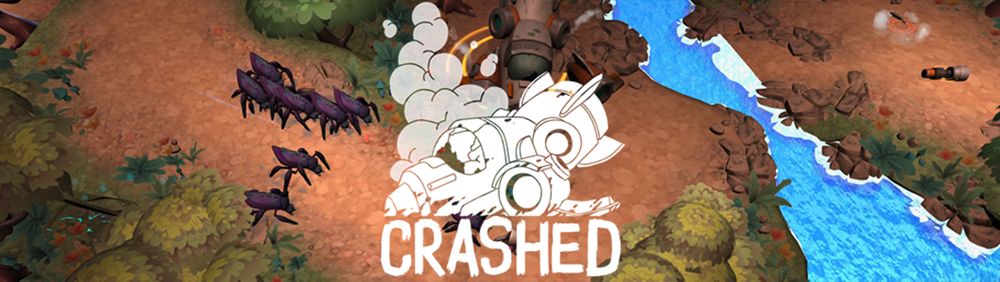

Crashed - Unity game
In the world of game development, collaboration is key, and my experience working on a Unity project exemplified this core principle. I was fortunate to be part of a team comprising of two artists and another programmer, all brought together to bring our collective vision to life.
My Role in the Team: Our adventure began when we got the green light for our game idea. From that point, my role as one of the project's programmers was both varied and essential. In the first two weeks of the project, we focused on prototyping. This was the phase where we fine-tuned our ideas and laid the groundwork for our game. During this period, my responsibilities spanned a wide range, including:
As we transitioned from the prototyping phase to production, my role evolved to address more intricate challenges. During the second sprint, I was tasked with finalizing camera behavior and bringing the enemy behaviors to life. This phase also involved implementing the mechanics of the playable characters.
The third sprint saw me taking charge of further enhancing the playable characters. I introduced an inventory system, both visually and in code. Ensuring that equipped weapons appeared correctly and functioned seamlessly required constant communication with our talented artists. Together, we addressed challenges such as splitting models into multiple parts or resizing them to maintain scale consistency.
The final sprint was dedicated to polishing our game to a high standard. My focus shifted to refining the behavior of in-game weapons, collaborating closely with artists to integrate sound and particle effects to enhance the overall experience. Additionally, I spent time fine-tuning enemy behavior and making necessary gameplay adjustments.
In summary, my role in this Unity project encompassed programming, collaboration, and communication. Through our collective efforts, we transformed our initial concept into a fully realized and engaging gaming experience. This project highlighted the importance of teamwork, adaptability, and effective communication in the world of game development.
Gameplay video: